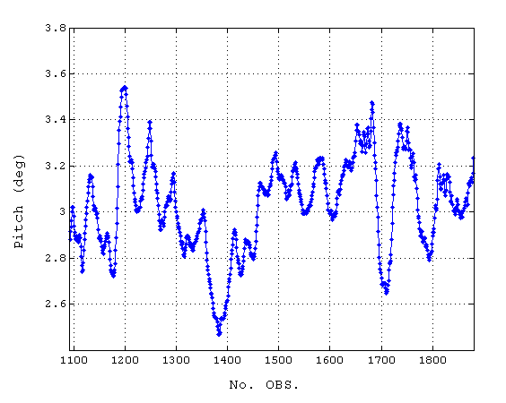
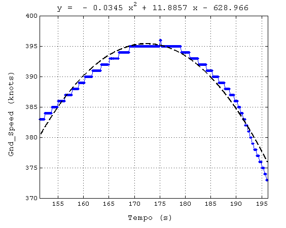
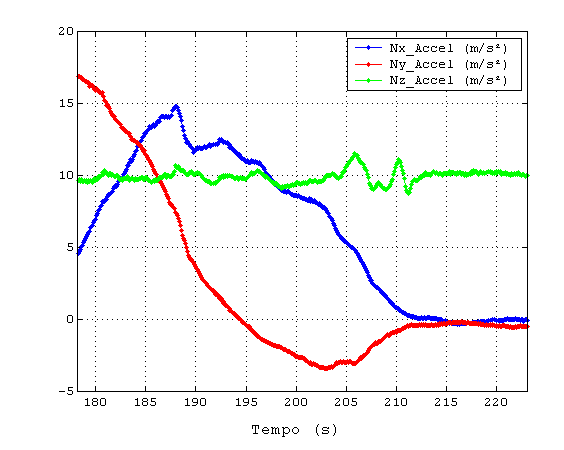

| Menu
Editar |
|
Copiar
no Modelo
Essa operação
permite copiar o(s) gráfico(s) segundo uma
formatação pré-definida pelo usuário.
Clique no menu “Editar ►
Copiar no modelo” ou no botão na
Barra de Ferramentas.
O R_DAT irá
transferir parte dos objetos do(s) gráfico(s) visíveis para uma janela com elementos gráficos pré-formatados pelo
usuário
através da função Editar
modelo de cópia. Os
seguintes objetos serão transferidos:
- Gráfico principal;
- Plote
principal;
- Quatro plotes secundários;
- Nomes dos eixos;
- Título do gráfico;
- Plote do ajuste de
curva.
|
Nota: O modelo
suporta 1 gráfico com até 5 plotes ou até 5 gráficos com apenas 1 plote.
Para os demais casos, use cópia
comum. |
Alguns exemplos
de cópias formatadas são apresentados
abaixo:
Gráfico simples:

Ajuste de curva:

Plotes múltiplos:

Gráficos múltiplos:

Após a cópia, a
janela permanecerá aberta para edições
adicionais.
|
Nota: Caso o modelo
esteja incompleto ou não esteja definido, não será possível realizar a
operação. Execute a operação Editar
modelo de cópia para redefinir o modelo. |
| |
Copiar |
Editar
modelo |
|